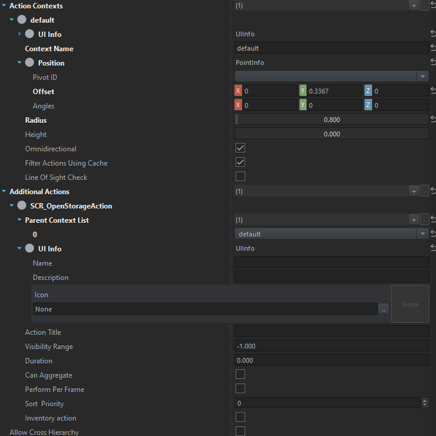
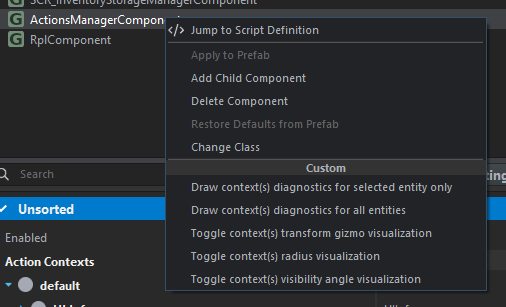
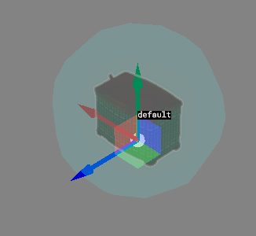
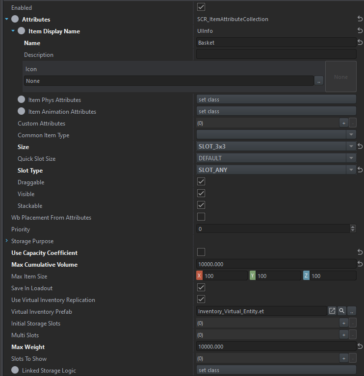

How does the TrainWreck Looting system recognize something as "lootable"?
A handful of Inventory Components must be present on the prefab in order for it to be considered an "inventory".
Our TW_LootableInventoryComponent must be added.
How to make something lootable
External or Base Game
Navigate to the prefab you want to make lootable
Right click --> Override
RplComponent
If this component does not exist, add it.
If this component does exist, but is disabled - enable it.
ActionsManagerComponent

How to setup ActionsManagerComponent
Add at least one context. This sets the positional/conditional context in how an action is presented to the player.
The UI Info for the action context is not important, doesn't need to be set.
The position, for most cases can be a **PointInfo**. Click on the offset value in the property editor. This should allow you to move the transform around in the editor. Note how the x/y/z values will change as you move the transform around.
Update the radius to something reasonable, we found 0.8 to be a sweet spot for most items.
For further assistance, you can right-click on the ActionsManagerComponent to enable debug drawing.

Set "Context Name" to something reasonable. We have been using "default" for simplicity.
Now add an additional context. Set it to `SCR_OpenStorageAction`.
Add a context in the "Parent Context List". Select the one you created, or want to use. Again, we have been using "default", which is what we created in the above steps.
Set UI Info. You can leave it blank. This gets populated programmatically based on state.
SCR_InventoryStorageManagerComponent
This is an easy step. Just make sure it's present, enabled. If it's not present add it! Done!
SCR_UniversalInventoryStorageComponent

Set "Attributes" to `SCR_ItemAttributeCollection`
Set "Item Display Name" to something reasonable. This is what appears to the player when they're in the inventory screen.
Now, we're not entirely sure if this impacts things but the following size types are what we've been using
"Size" --> Slot 3x3
"Slot Type" --> Slot_Any
Use Capacity Coefficient --> Disable
Max Cumulative Volume --> 10000
Max Weight --> 10000
TW_LootableInventoryComponent
This should be straight forward. What kind of loot do you want to spawn in here? Check the boxes to allow certain types to spawn.